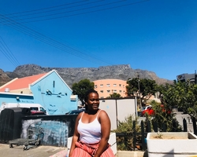

NWABISA
DLOKWENI

FAVOURITE CITY
- Paris is he capital city of France.
- It is often seen as having beauty, elegance and as being a boldly romantic city.
- La Tour Eiffel(THE TOWER) is the most famous monument in Paris and is much loved by all those who visit.
Paris

FOREIGN LANGUAGE
| English languange | Spanish language |
|---|---|
| Hello | Hola |
| You are beautiful | Eres hermosa |
| You are welcome | de nada |
| Thank you | gracias |
HISTORICAL PLACES IN CAPE TOWN
Castle of Good Hope
- The castle of Good Hope was known as "The Castle" back in the days.
- It wa originally located on the casline of the Table Bay.
- In 1936 the Castle was declared a historical monument
Parliament
- The President is not a member of Parliament. After an MP is elected as President, he or she loses the seat and the vacancy is filled by the next eligible person from the same party.
- Every five years the people of South Africa get an opportunity to cast their votes for a new Parliament.
- Parliament consists of two Houses called the National Assembly and National Council of Provinces.
Green Market Square
- Greenmarket Square is the place to be for African art music paintings, masks, clothing, statues, jewelry and more.
- The market lies between Long Street and St Georges Mall, on the level of Short Market Street and/or Long Market Street.
- Apart from a vibrant atmosphere, the square has a rich history.